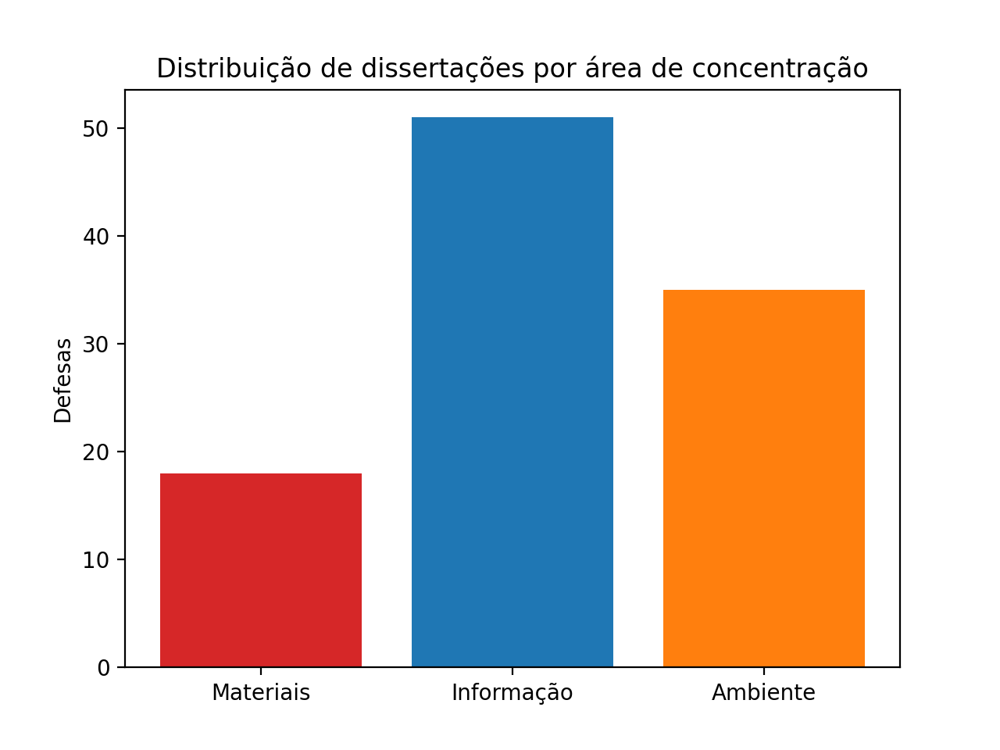
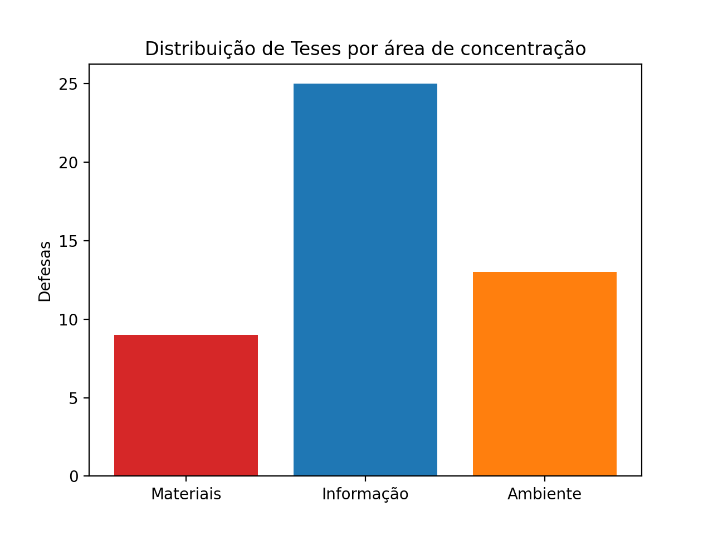
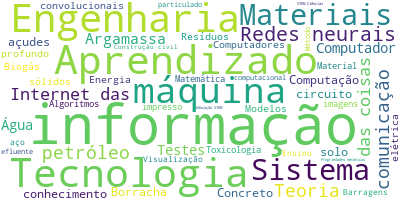
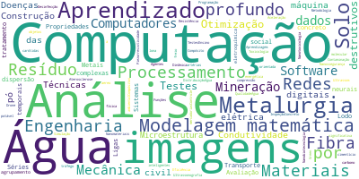
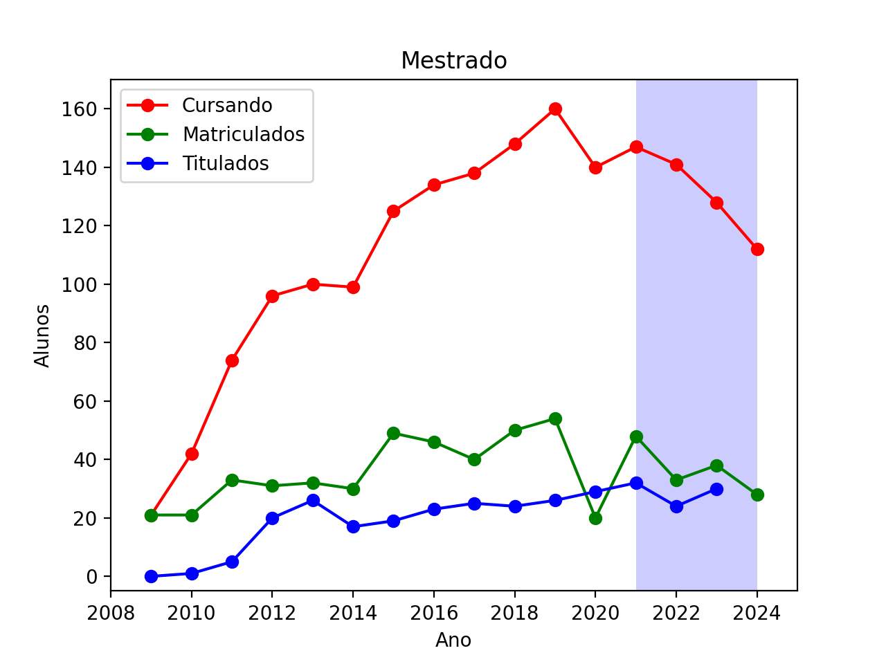
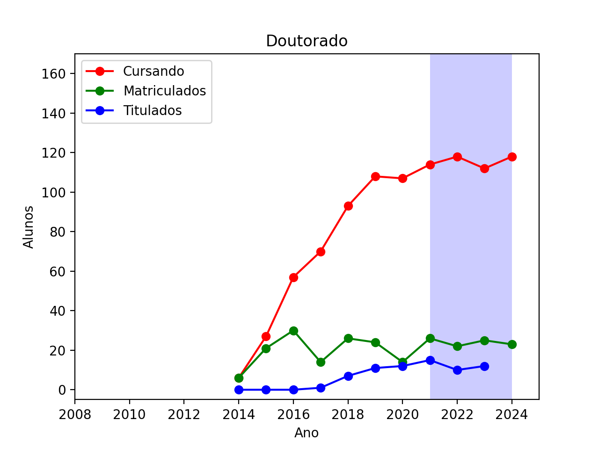
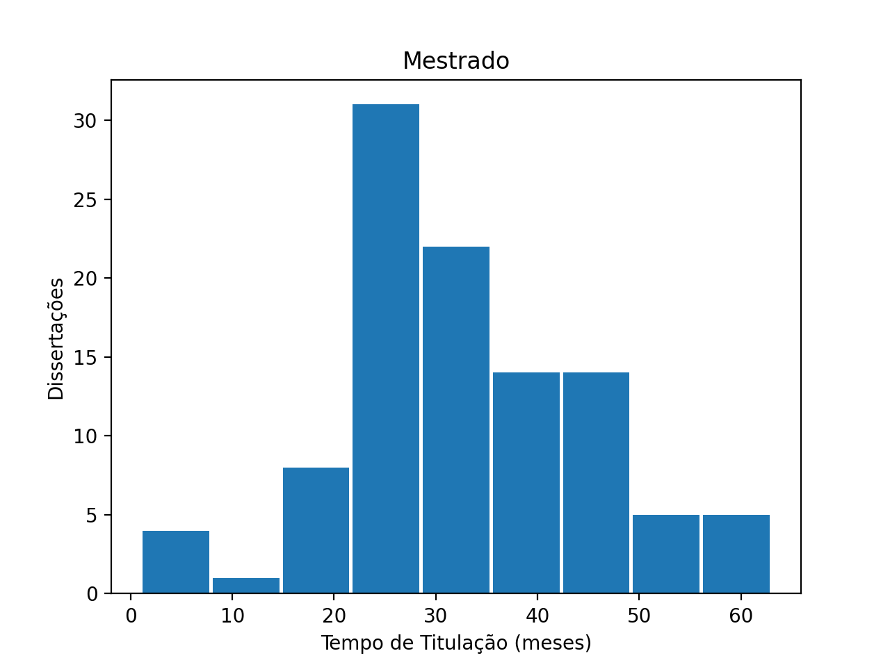
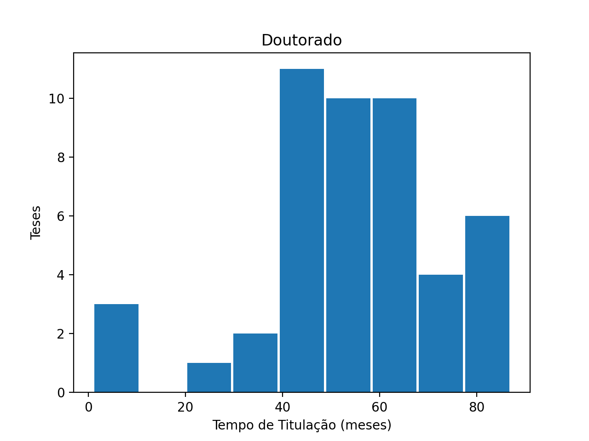
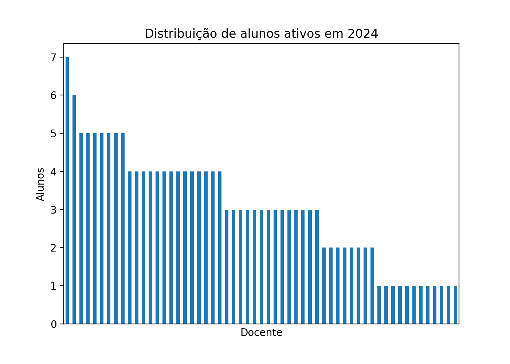
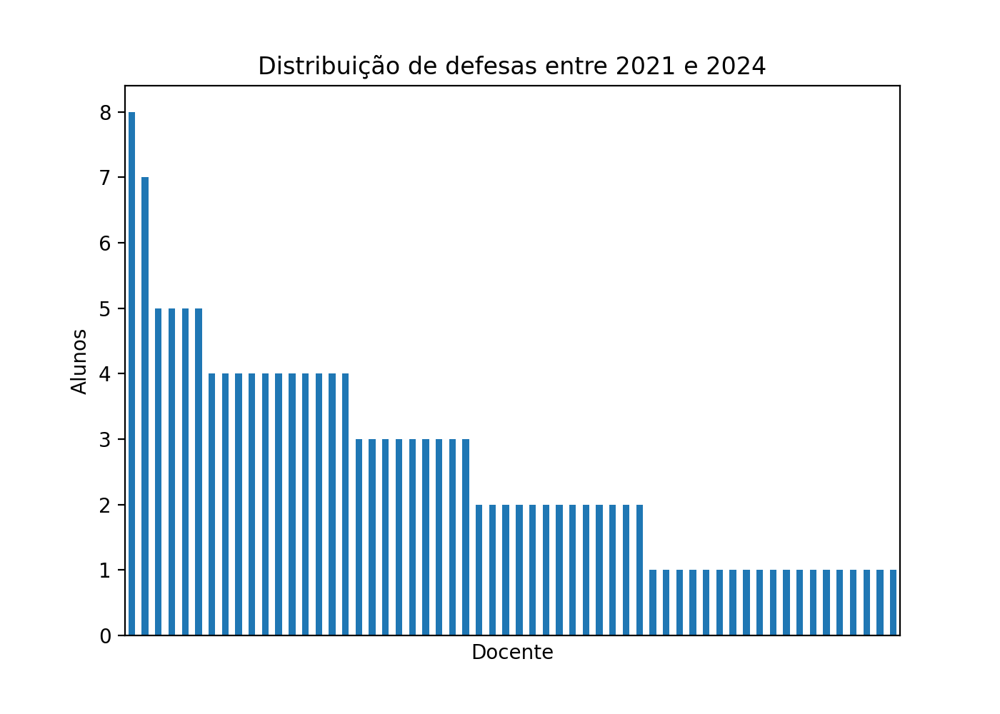

6 Formação
Neste capítulo, o CAA analisa o programa do ponto de vista da formação de recursos humanos. Neste quesito, serão analisados dados da adequação das teses e dissertações em relação às áreas de concentração, a evolução das defesas em função do tempo, a qualidade da produção intelectual de discentes e egressos, e o envolvimento do corpo docente nas atividades de orientação.
6.1 Adequação das teses e dissertações em relação às áreas de concentração
Os dados das dissertações e teses disponibilizados pela Diretoria Acadêmica (DAC) da Unicamp mostram uma distribuição não equilibrada em relação às áreas do concentração do PPGT. No entanto, se normalizarmos esses dados pela quantidade de docentes (colaboradores e permanentes) por área de concentração (10 para Ciência dos Materiais, 26 para Sistemas de Informação e Comunicação e 22 para Ambiente) teremos uma média de 2.3(1.1), 2.5(1.1) e 2.1(0.8) defesas de mestrado(doutorado) por docente das áreas de Ciência dos Materiais, Sistemas de Informação e Comunicação e Ambiente, respectivamente, indicando uma distribuição equilibrada por área de concentração.


O CAA também analisou as informações das dissertações e teses defendidas disponíveis no repositório da produção intelectual da Unicamp, coletadas no período de 2021 à 2024 (18/09/2024). É importante mencionar que no repositório não constam todas as dissertações e teses defendidas. Isso se dá pelo fato de que algumas delas ainda estão no período de sigilo por conter informações associadas a artigos submetidos. A partir das palavras-chave contidas nos dados do repositório, obtivemos as nuvens de palavras mostradas a seguir (teses e dissertações, respectivamente). Podemos notar a presença de temas fortemente relacionados às áreas de concentração como (Sistemas de informação e comunicação) computação, imagens, aprendizado (de máquina), informação; (Materiais) materiais, concreto, argamassa, metalurgia; (Ambiente) água e solo.


6.2 Evolução das defesas do PPGT
A CAPES indicou que “Um bom número de dissertações e teses foram defendidas em temas alinhados aos objetivos do Programa” no quadriênio anterior. Neste quadriênio, a quantidade de defesas permanece alto, com 41 defesas de doutorado e 96 de mestrado. A fim de analisar a evolução do número de defesas do PPGT, dados fornecidos pela DAC estão mostrados nos gráficos a seguir. Nota-se que, o número de ingressantes (matriculados), titulados e de alunos que estão cursando o doutorado no PPGT se manteve estável no quadriênio em curso. Por outro lado, houve uma diminuição dos alunos cursando o mestrado e também uma tendência de queda para o número de ingressantes.


6.3 Produção intelectual de discentes e egressos
Os dados obtidos para contabilizar a produção intelectual foram extraídos dos CV Lattes dos docentes permanentes do PPGT por meio do programa lucyLattes.py v1.1. A partir desses dados forma estimados alguns índices usados pela Capes para avaliar os programas. Os índices calculados foram o índice de Produtividade referente a artigos científicos (IndProdArt) e o o índice de Autoria Discente e de Egressos (IndAutDisEg). Como a maior parte da produção do PPGT é com artigos, o IndProdArt é a maior contribuição do programa.
Para estimarmos o IndAutDisEg, consideramos os alunos que defenderam no quadriênio e os egressos de 2016 a 2020 e comparamos com os autores dos artigos publicados no mesmo período. Os nomes dos egressos e dos alunos que defenderam no período foram obtidos do repositório intelectual da Unicamp e os autores dos artigos a partir dos currículos Lattes dos docentes permanentes (lista dos artigos disponível no Anexo).
No total, foram 321 egressos/titulados, sendo que 145 deles publicaram no quadriênio, sendo:
- 31 no ano de 2021;
- 46 no ano de 2022;
- 46 no ano de 2023;
- 22 no ano de 2024.
O número de alunos cursando o PPGT foi (mestrado + doutorado):
- 204 no ano de 2021;
- 177 no ano de 2022;
- 179 no ano de 2023;
- 230 no ano de 2024.
A partir desses dados, o valor de IndAutDisEg obtido foi 0.191. Chama a atenção do CAA o fato de esse número ser baixo, o que nos leva a crer que os alunos estão deixando para publicar os resultados muito tarde no curso e poucas vezes.
6.4 Envolvimento do corpo docente em atividades de orientação.
O CAA avaliou índices de orientação, tempo de titulação, distribuição de docentes por professores e oferecimento de disciplinas por docentes.
1. Índices de orientação
De acordo com os dados do Repositório Intelectual da Unicamp, foram 137 defesas de 2021 a 2024, sendo 41 de doutorado e 96 de mestrado. De acordo com a secretaria do PPGT, o número de docentes permanentes no Programa no quadriênio foi de (i) 49 em 2021; (ii) 51 em 2022; (iii) 51 em 2023; e (iv) 51 em 2024.
Considerando, como aproximação, que o número \(DP\) de docentes permanentes por ano foi de 51 (dado ser o número vigente na maioria do período), o \(IndOri = (\text{\# Defesas de Mestrado} + 2\times\text{\# Defesas de Doutorado})/DP\) será \(IndOri=(1/4)(96 + 2\times41)/51=0.872\).
Vale ressaltar que esse é uma estimativa potencialmente subestimada, pois não se tem todos os dados para o ano de 2024. O \(IndDistOrig\) é calculado por \(IndDistOri = (\text{número de docentes permanentes que concluíram orientações no ano})/DP\). De acordo com os dados da DAC temos que o número de docentes permanentes que concluíram orientações no quadriênio foram 39. Assim, \(IndDistOri = (39/51)=0.764\).
2. Tempo de titulação
Os gráficos a seguir mostram o histograma do tempo de titulação para o mestrado e doutorado. O tempo médio de titulação foi 54 \(\pm\) 19 meses para o doutorado e 32 \(\pm\) 12 meses para o mestrado. Vemos que tanto para o mestrado como para o doutorado, os tempos médios estão acima dos tempos esperados de 48 e 24 meses, respectivamente.


3. Distribuição de orientações por docentes
O gráfico a seguir mostra a distribuição dos alunos ativos por docente permanente. Observa-se que a maioria dos professores possui três ou quatro alunos, um número considerado muito bom pelo CAA. Além desses docentes, existe um grupo de nove com cinco ou mais alunos. Os outros docentes possuem um ou dois alunos no programa em 2024, um número que pode ser melhorado com a aquisição de novos alunos para o programa.

O gráfico a seguir foca na distribuição de alunos defendidos por docente permanente no período de 2021 a 2024. Observa-se no centro do gráfico que metade dos professores concluíram a formação de três ou mais alunos, e que a outra metada concluiu a formação de um ou dois alunos.
